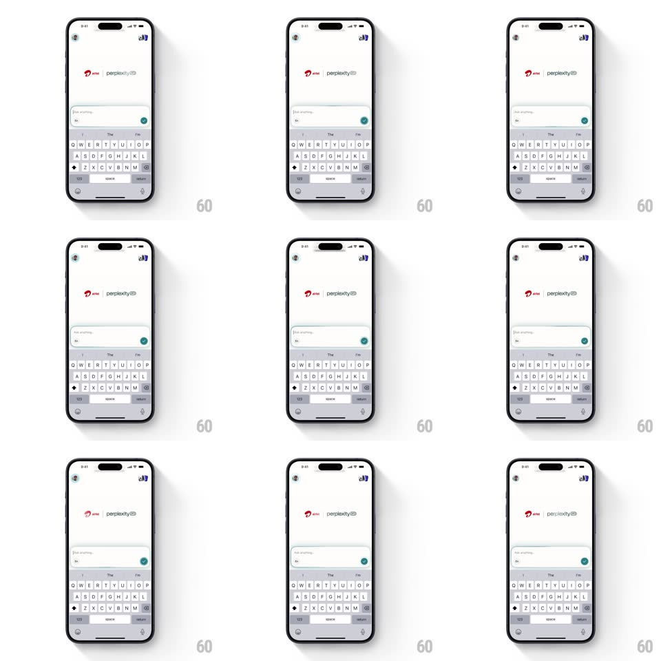

Media
Frame-by-frame

Rebuild this animation 1:1: Perplexity's voice-mode input stroke - while voice input is active, a colorful gradient stroke (teal, green, blue) travels continuously around the rounded input box border above the keyboard.

Rebuild this animation 1:1: Perplexity's voice-mode input stroke - while voice input is active, a colorful gradient stroke (teal, green, blue) travels continuously around the rounded input box border above the keyboard.
## Integration
Integration: stack-agnostic spec - springs given as stiffness/damping, timed motions as duration + curve; map every value to your framework and animation library of choice.
## Scene
Light chat screen: Perplexity thread header, a composer bar ("Ask anything...") with mic and send, keyboard below. Active voice state: the composer's rounded-rect border carries a bright multi-color gradient segment that orbits the perimeter; the rest of the border stays faint gray.
## Motion spec
Pattern: orbiting gradient stroke, looping.
- Orbit: a 25%-of-perimeter gradient arc travels around the border (1.6s per lap, linear), its head brightest, tail fading into the base border.
- Colors: the arc cycles teal -> green -> blue along its length, the hue drifting slowly (8s cycle).
- Level: the arc's thickness pulses subtly with mic amplitude (2px - 4px), reacting within 80ms.
- Exit: ending voice mode retracts the arc - it shortens to zero length at its tail (250ms) and the border returns to solid gray.
## Calibration
- The stroke follows the rounded corners exactly - no clipping at the radii.
- The orbit never stops or reverses while listening.
## Reduced motion
The border shows a static gradient with a slow opacity pulse (2s); no orbit.
## Don't miss
- The arc is a segment, not a full-border gradient - the contrast with the gray remainder is the effect.
- Amplitude pulses are subtle; the border never thickens beyond 4px.